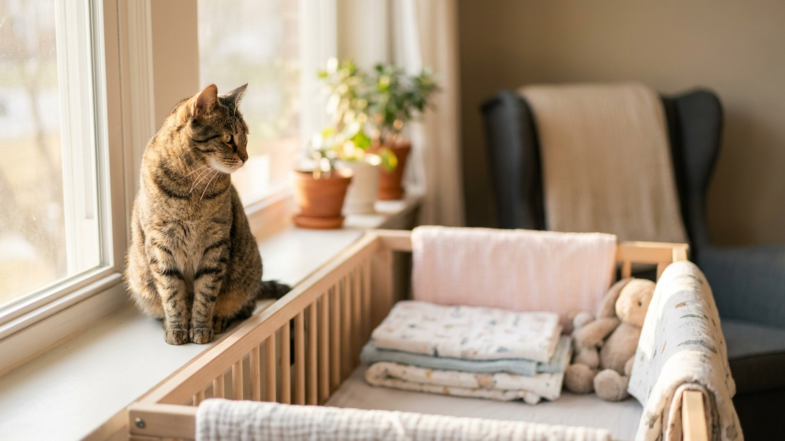

Кошка и новорождённый: подготовка за 2 месяца, мифы о токсоплазмозе и как устроить первую встречу

2 июня 2026 · 9 минут чтения · Кошки и семья
«Кошку придётся отдать» — первая мысль многих будущих родителей. Это ошибка, которая разбивает семьи питомцев и причиняет боль животному, не сделавшему ничего плохого. Кошка и новорождённый ребёнок совместимы — при грамотной подготовке, которая начинается за 6-8 недель до родов. Вот конкретный план.
Сначала о токсоплазмозе: факты вместо мифов
Токсоплазмоз — главная причина, по которой беременным советуют избавиться от кошки. Разберём, что правда, а что нет.
Правда: кошки — окончательные хозяева Toxoplasma gondii. Только в кишечнике кошки паразит проходит половой цикл размножения и образует ооцисты, которые выделяются с фекалиями. Если беременная женщина инфицируется токсоплазмой впервые во время беременности — это риск для плода (выкидыш, пороки развития нервной системы).
Неправда: что кошка = обязательный источник заражения.
- Кошка выделяет ооцисты только однократно в жизни — в течение 1-3 недель после первичного заражения. После этого формируется иммунитет, и выделение прекращается. Домашняя кошка, не выходящая на улицу и не питающаяся сырым мясом, практически нулевой риск.
- Основной источник заражения токсоплазмой у людей — не кошки, а сырое и недожаренное мясо (особенно свинина и баранина), немытые овощи и фрукты, садовая земля.
- В РФ по данным Роспотребнадзора около 30-40% взрослого населения уже иммунно к токсоплазмозу — перенесли в лёгкой форме. Если у женщины есть антитела IgG к токсоплазме — повторное заражение не опасно для плода.
Что реально нужно сделать при беременности:
- Сдать анализ на токсоплазмоз (IgG и IgM) в начале беременности. Если IgG положительный — иммунитет есть, риск минимален.
- Лоток чистить не самой беременной, а партнёром. Если некому — использовать перчатки и маску, мыть руки.
- Менять лоток каждый день: ооцисты становятся заразными только через 24-48 часов после выделения. Ежедневная уборка обнуляет риск.
- Кошку не нужно отдавать, изолировать или сдавать в ветклинику на период беременности.
Подготовка за 6-8 недель до родов: адаптация к новым запахам
Кошка живёт в мире запахов. Новорождённый ребёнок — это новый, незнакомый, очень интенсивный запах. Главная ошибка — дать кошке столкнуться с ним в день приезда из роддома. Правильный подход — дать познакомиться с этим запахом заранее.
- Детская косметика: за 4-6 недель начните пользоваться детским кремом, маслом, пудрой — теми, которыми будете пользоваться для ребёнка. Наносите на руки, ходите в обычном режиме. Кошка понюхает, привыкнет, перестанет реагировать.
- Запахи детской комнаты: разрешите кошке исследовать детскую до появления ребёнка. Она обследует кроватку, коляску, пеленальный стол — и успокоится. Кошка, которая исследовала пространство до, не испытывает паники «что это такое» после.
- Звук плача: за 2-3 недели начните периодически включать записи детского плача — тихо, не пугая. Постепенно кошка перестаёт реагировать на незнакомый звук. Без подготовки плач новорождённого — острый стресс для кошки.
- Вещи из роддома: попросите партнёра привезти домой один из первых предметов одежды ребёнка до его приезда. Положите на полу — пусть кошка обнюхает в спокойной обстановке, без стресса от чужих людей и суеты.
Организация пространства: где кошка, где малыш
Правило одно: кошка не должна иметь доступ к кроватке и коляске без надзора. Не потому что кошка «заберёт воздух» (это городская легенда без физиологической основы), а потому что тяжёлая кошка на лице спящего ребёнка — реальный риск асфиксии.
- На период, пока ребёнок спит без надзора — дверь в детскую закрыта или установлена сетчатая дверь (продаются как «дверь для кошек» или «защита от питомца», позволяют проветривать комнату).
- Кошке нужно постоянно доступное убежище — место, куда ребёнок не может добраться. Верхняя полка, скрэтчер с площадкой, отдельная комната. Это не изоляция, а принцип «есть место для отдыха от стимулов».
- Миска, лоток и лежанка кошки остаются на месте. Не переставляйте всё сразу с появлением ребёнка — это удвоенный стресс. Если нужно переместить лоток (например, из детской) — делайте это постепенно, по 30-50 см в день, за 3-4 недели до родов.
- Лоток убирается в место, недоступное ребёнку — но не туда, куда кошка не может попасть. Частая ошибка: лоток убирают в кладовку и не думают, что кошка должна иметь к нему доступ в любое время.
Первая встреча: пошаговый протокол
Правильно организованная первая встреча снижает вероятность проблем в будущем в разы. Хаотичная — создаёт устойчивую ассоциацию «ребёнок = опасность».
- Шаг 1. Перед приездом из роддома один из взрослых заходит домой первым, встречает кошку, проводит несколько минут как обычно. Кошка не должна встречать только незнакомых людей.
- Шаг 2. Мама входит без ребёнка — с пустыми руками. Даёт кошке поприветствовать себя, понюхать руки. Кошка должна почувствовать: хозяйка вернулась, всё нормально.
- Шаг 3. Ребёнка вносят в спокойной обстановке. Кошке дают возможность подойти самостоятельно — не тащат её к ребёнку, не форсируют контакт. Кошка нюхает ноги, одеяло — и уходит. Это нормально. Повторяется несколько раз в день.
- Шаг 4. Первые дни кошку не прогоняют от ребёнка без причины. Кошка, которую отталкивают каждый раз, когда она приближается к ребёнку, делает вывод: ребёнок — причина негативного поведения хозяев.
- Шаг 5. Кормление, игра с кошкой — не бросать в хаосе первых недель. Сохранение ритуалов важнее всего. Хотя бы 5 минут в день осознанного контакта с кошкой.
Если кошка стала метить или агрессивна после появления ребёнка
Мечение (разбрызгивание мочи) и агрессия — признаки высокого стресса, а не «мести» или «зависти». Кошка не способна мстить в человеческом смысле. Она реагирует на изменение своей среды.
При мечении:
- Проверьте, не изменился ли режим уборки лотка. Стресс + грязный лоток = мечение вне лотка у многих кошек.
- Феромонный диффузор Feliway Classic или Feliway Optimum в розетку в основной комнате — снижает тревогу за 3-7 дней.
- Убедитесь, что у кошки есть недоступное для ребёнка убежище.
- Исключите медицинскую причину мечения: стресс может спровоцировать ИППС (идиопатический цистит). Кровь в моче, частые безуспешные попытки помочиться — к врачу.
При агрессии:
- Не наказывать — усилит страх и агрессию.
- Если кошка шипит или ударяет лапой на приближение к ребёнку — разделить пространство временно. Это не капитуляция, это менеджмент ситуации.
- Обратиться к ветеринарному поведенческому специалисту. В Москве — «Центр поведенческой медицины» (ул. Тверская), онлайн-консультации доступны по всей России.
- При выраженной агрессии: медикаментозная поддержка. Препараты: Zylkene (гидролизат казеина, без рецепта), Anxitane (L-теанин, без рецепта), по назначению врача — флуоксетин или буспирон.
Что НЕ делать при появлении новорождённого с кошкой в доме
Не отдавать кошку «на всякий случай» без реальной медицинской или поведенческой необходимости. Это стресс для животного и потеря для семьи — кошка была частью дома, она этого не заслуживает. Не изолировать кошку в одной комнате на месяц — это не адаптация, а пытка. Не форсировать контакт кошки с ребёнком против её воли — только добровольный контакт формирует нейтральное или позитивное отношение. Не переставлять всё сразу: кошка переносит одно большое изменение хуже, чем несколько маленьких постепенных.
Кошки и дети вырастают вместе — и это одни из самых тёплых воспоминаний детства для тех, у кого так было. Заложить правильный фундамент в первые недели — значит обеспечить годы мирного сосуществования.
← Все статьи · Открыть AnimaLife в Telegram · RSS